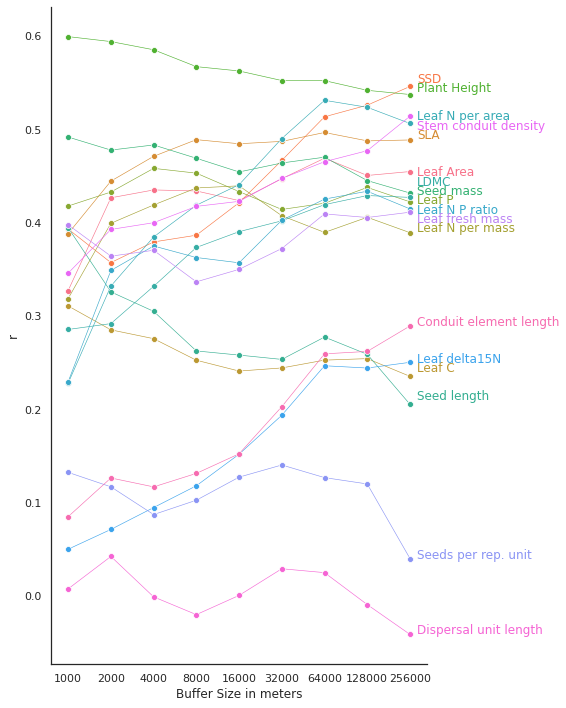
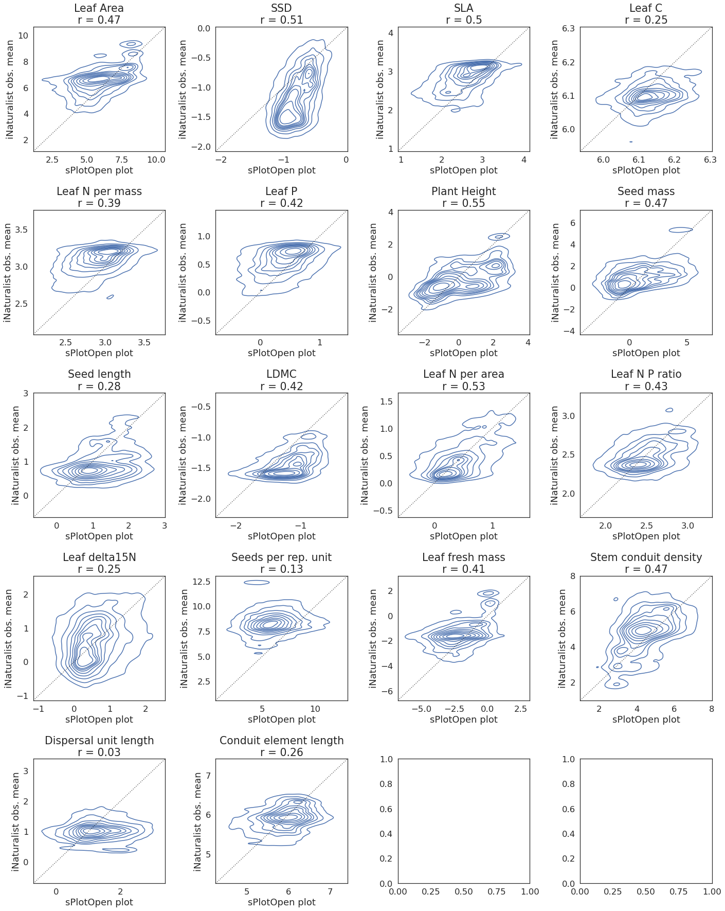

Calculate correlation of sPlot CWM and iNaturalist averages
Contents
Calculate correlation of sPlot CWM and iNaturalist averages#
Here we correlate the aggregated trait values close each sPlot (with a certain range) to the community weighted trait mean of each plot (cwm).
This section includes:
Plot r for each buffer size
Scatter correlation plots for 64,000 m buffer size
import pandas as pd
import numpy as np
import os
#plotting
import matplotlib.pyplot as plt
import seaborn as sns
from matplotlib.colors import LogNorm, Normalize
import cartopy.crs as ccrs
from matplotlib.colors import BoundaryNorm
from matplotlib.ticker import MaxNLocator
import math
sPlot = pd.read_csv("sPlotOpen/cwm_loc.csv")
Plot r for each buffer size#
buffer_sizes = [1000,2000,4000,8000,16000,32000,64000,128000,256000]
trait =['Leaf Area',
'SSD',
'SLA',
'Leaf C',
'Leaf N per mass',
'Leaf P',
'Plant Height',
'Seed mass',
'Seed length',
'LDMC',
'Leaf N per area',
'Leaf N P ratio',
'Leaf delta15N',
'Seeds per rep. unit',
'Leaf fresh mass',
'Stem conduit density',
'Dispersal unit length',
'Conduit element length'
]
r_all = pd.DataFrame(columns=trait)
for buffer in buffer_sizes:
file_name = "Buffer_Rerun/all_buffer_means_" + str(buffer) + ".csv"
buffer_means = pd.read_csv(file_name,
sep=",",
usecols=['NumberiNatObservations','PlotObservationID', 'Leaf Area',
'SSD',
'SLA',
'Leaf C',
'Leaf N per mass',
'Leaf P',
'Plant Height',
'Seed mass',
'Seed length',
'LDMC',
'Leaf N per area',
'Leaf N P ratio',
'Leaf delta15N',
'Seeds per rep. unit',
'Leaf fresh mass',
'Stem conduit density',
'Dispersal unit length',
'Conduit element length'
],
index_col=False)
buffer_means = buffer_means[~buffer_means.isin([np.nan, np.inf, -np.inf]).any(1)]
#transform dataframe from wide to long
sPlot_t = sPlot.melt(id_vars=["PlotObservationID", "Latitude", "Longitude", "Biome", "Naturalness", "Forest",
"Shrubland", "Grassland", "Wetland", "Sparse_vegetation"],
value_name="TraitValue",
var_name="Trait",
value_vars=trait)
buffer_means_t = buffer_means.melt(id_vars=["PlotObservationID", "NumberiNatObservations"],
value_name="TraitValue",
var_name="Trait",
value_vars=trait)
sPlot_buffers_merged = pd.merge(sPlot_t, buffer_means_t, on=["PlotObservationID", "Trait"])
# claculate r and ranges for all traits
r_buffer=[]
for i in trait:
#corr_trait = sPlot[i].fillna(0).corr(buffer_means[i].fillna(0))
corr_trait = sPlot[i].corr(buffer_means[i])
r_trait = corr_trait
r_buffer.append(r_trait)
s = pd.Series(r_buffer, index=r_all.columns)
r_all = r_all.append(s, ignore_index=True)
r_all['BufferSize'] = buffer_sizes
r_all
| Leaf Area | SSD | SLA | Leaf C | Leaf N per mass | Leaf P | Plant Height | Seed mass | Seed length | LDMC | Leaf N per area | Leaf N P ratio | Leaf delta15N | Seeds per rep. unit | Leaf fresh mass | Stem conduit density | Dispersal unit length | Conduit element length | BufferSize | |
|---|---|---|---|---|---|---|---|---|---|---|---|---|---|---|---|---|---|---|---|
| 0 | 0.327212 | 0.393096 | 0.388285 | 0.310698 | 0.318676 | 0.417778 | 0.599255 | 0.491661 | 0.394473 | 0.285530 | 0.228102 | 0.229549 | 0.050140 | 0.132439 | 0.397651 | 0.345894 | 0.007653 | 0.085008 | 1000 |
| 1 | 0.426574 | 0.357159 | 0.444459 | 0.285129 | 0.399287 | 0.432745 | 0.593935 | 0.477698 | 0.325800 | 0.291813 | 0.332025 | 0.348768 | 0.071325 | 0.116958 | 0.364058 | 0.392696 | 0.042383 | 0.126451 | 2000 |
| 2 | 0.434995 | 0.379288 | 0.471005 | 0.275669 | 0.418899 | 0.458121 | 0.585162 | 0.483190 | 0.304954 | 0.331761 | 0.384651 | 0.374946 | 0.094760 | 0.087250 | 0.370357 | 0.399894 | -0.000913 | 0.116891 | 4000 |
| 3 | 0.433900 | 0.386507 | 0.488867 | 0.252580 | 0.437119 | 0.452988 | 0.567086 | 0.468941 | 0.262529 | 0.373375 | 0.418641 | 0.362618 | 0.118075 | 0.102610 | 0.336556 | 0.417393 | -0.019950 | 0.131345 | 8000 |
| 4 | 0.423593 | 0.421343 | 0.484484 | 0.240975 | 0.439395 | 0.433246 | 0.562454 | 0.454250 | 0.258084 | 0.390314 | 0.440648 | 0.356950 | 0.151906 | 0.127337 | 0.349924 | 0.422772 | 0.000643 | 0.152324 | 16000 |
| 5 | 0.447045 | 0.466672 | 0.487007 | 0.244310 | 0.407360 | 0.414086 | 0.552194 | 0.463876 | 0.253451 | 0.401911 | 0.490071 | 0.402536 | 0.193645 | 0.140352 | 0.372263 | 0.447351 | 0.029196 | 0.202838 | 32000 |
| 6 | 0.469007 | 0.513363 | 0.496539 | 0.252682 | 0.389497 | 0.420769 | 0.552098 | 0.470084 | 0.277404 | 0.419255 | 0.531011 | 0.425185 | 0.246662 | 0.126832 | 0.409334 | 0.465274 | 0.025032 | 0.259420 | 64000 |
| 7 | 0.450491 | 0.525816 | 0.487563 | 0.254286 | 0.405706 | 0.437688 | 0.541702 | 0.445024 | 0.258906 | 0.428992 | 0.523541 | 0.433611 | 0.244218 | 0.120030 | 0.405460 | 0.477046 | -0.009207 | 0.262008 | 128000 |
| 8 | 0.454712 | 0.545861 | 0.488528 | 0.235307 | 0.389228 | 0.422237 | 0.537227 | 0.431674 | 0.205320 | 0.427026 | 0.506207 | 0.414711 | 0.250333 | 0.040132 | 0.411150 | 0.513977 | -0.041144 | 0.289280 | 256000 |
# https://stackoverflow.com/questions/44941082/plot-multiple-columns-of-pandas-dataframe-using-seaborn
# https://lost-stats.github.io/Presentation/Figures/line_graph_with_labels_at_the_beginning_or_end.html
# data
data_dropnan = r_all.dropna(axis=1, how='all')
data_melt=pd.melt(data_dropnan, ['BufferSize'], value_name="r")
data_melt =data_melt.astype({"BufferSize": str}, errors='raise')
# label names
trait_names = data_melt["variable"].unique()
sns.set(rc={'figure.figsize':(8,10)})
sns.set_theme(style="white")
fig, ax = plt.subplots()
# plot all lines into one plot
sns.lineplot(x='BufferSize',
y='r',
hue='variable',
data=data_melt,
ax=ax,
marker='o',
legend=None,
linewidth=0.6)
label_pos=[]
# Add the text--for each line, find the end, annotate it with a label
for line, variable in zip(ax.lines, trait_names):
y = line.get_ydata()[-1]
x = line.get_xdata()[-1]
if not np.isfinite(y):
y=next(reversed(line.get_ydata()[~line.get_ydata().mask]),float("nan"))
if not np.isfinite(y) or not np.isfinite(x):
continue
x=round(x)
y=round(y,2)
xy=(x*1.02, y)
if xy in label_pos:
xy=(x*1.02, y-0.01)
if xy in label_pos:
xy=(x*1.02, y+0.01)
label_pos.append(xy)
text = ax.annotate(variable,
xy=(xy),
xytext=(0, 0),
color=line.get_color(),
xycoords=(ax.get_xaxis_transform(),
ax.get_yaxis_transform()),
textcoords="offset points")
text_width = (text.get_window_extent(
fig.canvas.get_renderer()).transformed(ax.transData.inverted()).width)
#if np.isfinite(text_width):
# ax.set_xlim(ax.get_xlim()[0], text.xy[0] + text_width * 1.05)
# Format the date axis to be prettier.
sns.despine()
plt.xlabel("Buffer Size in meters")
plt.ylabel("r")
plt.tight_layout()
plt.savefig('../Figures/r_buffer.pdf', bbox_inches='tight')

Scatter correlation plots for 64,000 m buffer size#
optimal_buffer_size = 64000
file_name = "Buffer_Rerun/all_buffer_means_" + str(optimal_buffer_size) + ".csv"
buffer_means = pd.read_csv(file_name,
sep=",",
usecols=['NumberiNatObservations','PlotObservationID', 'Leaf Area',
'SSD',
'SLA',
'Leaf C',
'Leaf N per mass',
'Leaf P',
'Plant Height',
'Seed mass',
'Seed length',
'LDMC',
'Leaf N per area',
'Leaf N P ratio',
'Leaf delta15N',
'Seeds per rep. unit',
'Leaf fresh mass',
'Stem conduit density',
'Dispersal unit length',
'Conduit element length'
],
index_col=False)
buffer_means = buffer_means[~buffer_means.isin([np.nan, np.inf, -np.inf]).any(1)]
#transform dataframe from wide to long
sPlot_t = sPlot.melt(id_vars=["PlotObservationID", "Latitude", "Longitude", "Biome", "Naturalness", "Forest",
"Shrubland", "Grassland", "Wetland", "Sparse_vegetation"],
value_name="TraitValue",
var_name="Trait",
value_vars=trait)
buffer_means_t = buffer_means.melt(id_vars=["PlotObservationID", "NumberiNatObservations"],
value_name="TraitValue",
var_name="Trait",
value_vars=trait)
sPlot_buffers_merged = pd.merge(sPlot_t, buffer_means_t, on=["PlotObservationID", "Trait"])
trait=['Leaf Area',
'SSD',
'SLA',
'Leaf C',
'Leaf N per mass',
'Leaf P',
'Plant Height',
'Seed mass',
'Seed length',
'LDMC',
'Leaf N per area',
'Leaf N P ratio',
'Leaf delta15N',
'Seeds per rep. unit',
'Leaf fresh mass',
'Stem conduit density',
'Dispersal unit length',
'Conduit element length']
# calculate max-min ranges
def min__max_ranges(df, col_1, col_2, variable_col, variables):
range_all =[]
for i in variables:
df_sub = df[df[variable_col]==i]
df_sub = df_sub.dropna(subset = [col_1, col_2])
xmin = df_sub[col_1].quantile(0.01)
xmax = df_sub[col_1].quantile(0.99)
ymin = df_sub[col_2].quantile(0.01)
ymax = df_sub[col_2].quantile(0.99)
if xmin>ymin:
if not np.isfinite(ymin):
pass
else:
xmin = ymin
else:
pass
if xmax<ymax:
xmax=ymax
else:
pass
range_sub = [xmin, xmax]
range_all.append(range_sub)
ranges = pd.DataFrame()
ranges['variable'] = variables
ranges['min'] = [i[0] for i in range_all]
ranges['max'] = [i[1] for i in range_all]
ranges = ranges.set_index('variable')
return ranges
ranges = min__max_ranges(sPlot_buffers_merged, 'TraitValue_x', 'TraitValue_y',
variable_col='Trait', variables=trait)
ranges
| min | max | |
|---|---|---|
| variable | ||
| Leaf Area | 2.491325 | 9.293933 |
| SSD | -1.780534 | -0.281056 |
| SLA | 1.391215 | 3.694397 |
| Leaf C | 5.987216 | 6.251625 |
| Leaf N per mass | 2.325956 | 3.522470 |
| Leaf P | -0.430572 | 1.155212 |
| Plant Height | -2.443895 | 3.027281 |
| Seed mass | -2.659446 | 5.554995 |
| Seed length | -0.120123 | 2.489541 |
| LDMC | -2.016191 | -0.565417 |
| Leaf N per area | -0.303591 | 1.325981 |
| Leaf N P ratio | 1.918633 | 3.063715 |
| Leaf delta15N | -0.611625 | 2.018824 |
| Seeds per rep. unit | 2.394954 | 11.270200 |
| Leaf fresh mass | -5.332373 | 1.764311 |
| Stem conduit density | 1.988650 | 7.005393 |
| Dispersal unit length | -0.114169 | 2.806126 |
| Conduit element length | 4.705128 | 6.971030 |
This might take a few minutes to plot:
fig, axes = plt.subplots(ncols=4, nrows=5, figsize=(20,25))
sns.set_theme(style="white", font_scale=1.7)
for i, ax in zip(trait, axes.flat):
sub_df = sPlot_buffers_merged[sPlot_buffers_merged["Trait"]==i]
index=0
trait_title= str(i) + "\n" + "r = " + str(round(r_all.loc[6, i], 2))
sns.kdeplot(
data=sub_df,
x="TraitValue_x",
y="TraitValue_y",
ax=ax,
).set(title=trait_title, xlabel='sPlotOpen plot', ylabel='iNaturalist obs. mean')
ax.axline([0, 0], [1, 1], color= "black", alpha=0.6, ls = ":")
space = (ranges.loc[i, "max"]-[ranges.loc[i, "min"]]) * 0.2
ax.set_xlim(ranges.loc[i, "min"] - abs(space), ranges.loc[i, "max"] + abs(space))
ax.set_ylim(ranges.loc[i, "min"] - abs(space), ranges.loc[i, "max"] + abs(space))
index+=1
fig.tight_layout()
plt.savefig('../Figures/corr_buffer_all_64k_kde.pdf', bbox_inches='tight')
